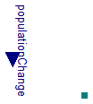

Extends from Interfaces.ConditionalChange (Input of population change vs. parametric constant change).
| Type | Name | Default | Description |
|---|---|---|---|
| PopulationChange | PopulationChange | 0 | Population change if useChangeInput=false [1/s] |
| External inputs/outputs | |||
| Boolean | useChangeInput | false | =true, if real input connector is used instead of parameter PopulationChange |
| Type | Name | Description |
|---|---|---|
| input PopulationChangeInput | populationChange | [1/s] |
| PopulationPort_b | port_b |
Extends from Interfaces.ConditionalChange (Input of population change vs. parametric constant change).
| Type | Name | Default | Description |
|---|---|---|---|
| PopulationChange | PopulationChange | 0 | Population change if useChangeInput=false [1/s] |
| External inputs/outputs | |||
| Boolean | useChangeInput | false | =true, if real input connector is used instead of parameter PopulationChange |
| Type | Name | Description |
|---|---|---|
| input PopulationChangeInput | populationChange | [1/s] |
| PopulationPort_a | port_a |
Extends from Modelica.Icons.SourcesPackage (Icon for packages containing sources).
| Name | Description |
|---|---|
| Growth | |
| Loss |